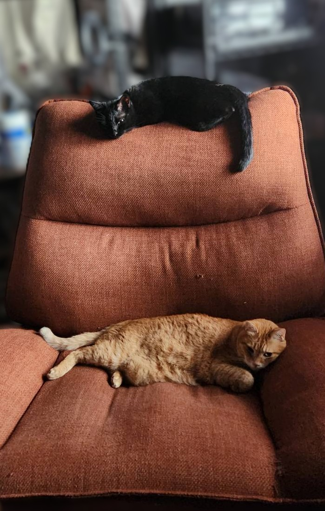

おはようございます。少し油断すると前の記事から２週間くらい経っちゃいますね。高頻度でも書くことが無くなるからこれくらいの頻度がちょうど良いのかもしれない。
タイトル通りです。最近は配信頻度落ちてますね。理由は主に前の記事で書いたように、今自分がやっているゲームで配信しやすいゲームが無い感じですね。ニーアはたまにやりますが集中も１時間くらいしか持たないし、FF7リバースも前の記事で書いた通り。blenderやってもいいんですが、本の通りに進めるのと違ってまっさらな中進めるってリソースをだいぶ持ってかれるんだなあと痛感しています。作業しながら雑談できる人はすごいですね。
そんな感じで配信頻度は少し控えめになっちゃうかもです。そのうち戻ると思いますけどね。
朝配信しなくなってから緩やかに起床時間が遅くなってます。猫が私の腕を枕にして寝るのでかわいいけど睡眠の質が落ちている気がする。

黒い方
かわいいんですけどね。猫の頭なんて大した重さはしてないんですけど、時間が経つと結構響くんです。最初は遠慮して動かなかったけど今はバンバン動いてます。
２週間空きまして書くこと溜まってるかなと思って記事を書きましたが内容が猫しかありませんでしたね。まあ記事にする濃い体験なんてそんなに出てくるもんじゃないと思います。今後何かあったら書いていこうと思います。
以上です！ここまで読んでいただきありがとうございました。